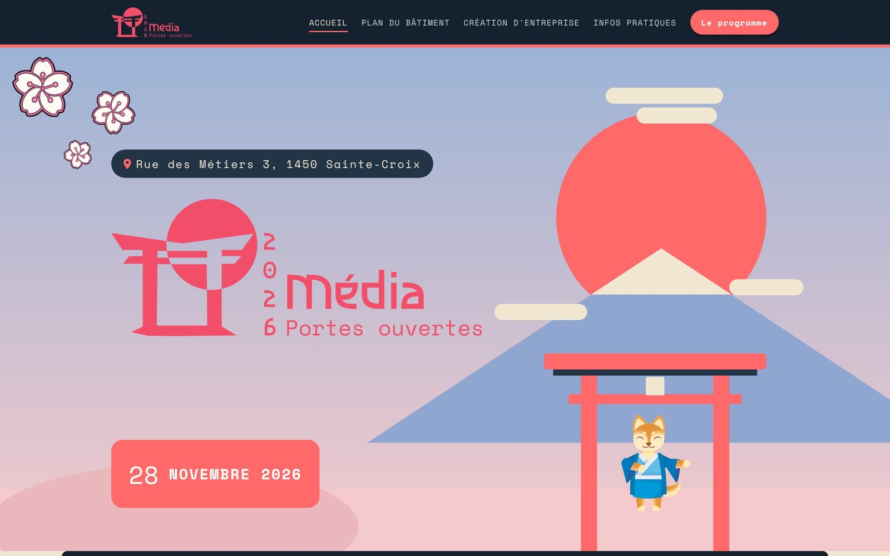

Portfolio / Projets / Portes Ouvertes 2026
Projet réel · en ligneSite des Portes Ouvertes de la médiamatique
Le site officiel des Portes Ouvertes 2026 de la médiamatique du CPNV, à Sainte-Croix. Un vrai projet, en ligne, réalisé au sein d'une équipe d'apprentis, dans lequel j'étais responsable web.

ContexteUn événement, une équipe
Chaque année, les apprentis médiamaticiens du CPNV organisent les Portes Ouvertes de leur filière. Pour l'édition 2026, qui a lieu les 27 et 28 novembre, notre groupe s'est réparti les rôles comme dans une petite agence : direction, design, communication, finances, multimédia et web.
J'ai pris le rôle de responsable web. Le site devait présenter l'événement aux futurs apprentis et à leurs parents, et donner envie de venir découvrir la formation sur place.
MissionCe que je devais faire
- Concevoir la maquette et la mise en page du site
- Intégrer l'univers graphique choisi par l'équipe design : un thème japonais aux couleurs pastel
- Développer le site en HTML, CSS et JavaScript, en pensant d'abord au mobile
- Héberger le site et le mettre en ligne avant l'événement
DémarcheComment j'ai travaillé
- 01
Reprendre l'identité
Je suis parti des éléments créés par l'équipe design : logo torii, couleurs corail et lavande, polices et mascotte. L'affiche a aussi été réalisée par l'équipe design.
- 02
Structurer le contenu
Programme des deux jours, vidéo, présentation du métier de médiamaticien, équipe, plan et infos pratiques.
- 03
Maquetter puis coder
Mise en page d'abord sur mobile, puis adaptation aux grands écrans. Illustrations en SVG pour garder un site léger.
- 04
Mettre en ligne
Hébergement, tests sur téléphone et ordinateur, puis corrections avec les retours de l'équipe.
MaquetteMa maquette avant le code
Avant d'écrire une ligne de code, j'ai fait une maquette de la page avec tout le contenu : en-tête, compte à rebours, présentation du métier, programme des deux jours et équipe. J'y ai aussi posé un petit guide de style pour que tout le monde parte des mêmes couleurs et des mêmes polices.
Le siteLe résultat en ligne
Le site final reprend la maquette et la complète avec trois pages : le plan du bâtiment étage par étage, les projets de l'option création d'entreprise et les infos pratiques avec une FAQ. Clique sur une page pour la voir en entier.
La mascotte et les affiches ont été créées par l'équipe design des PO.
BilanCe que j'en retiens
C'est mon premier site qui sert vraiment. Il fallait respecter des délais, travailler avec les idées des autres et faire un site que des gens utilisent pour de vrai.